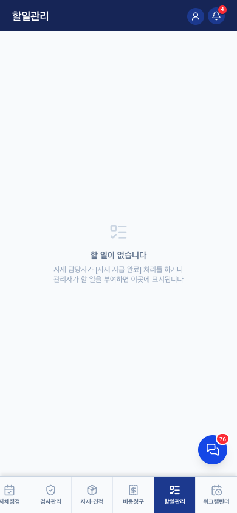
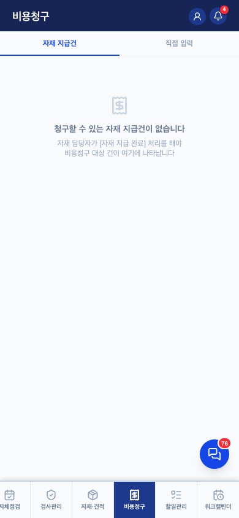
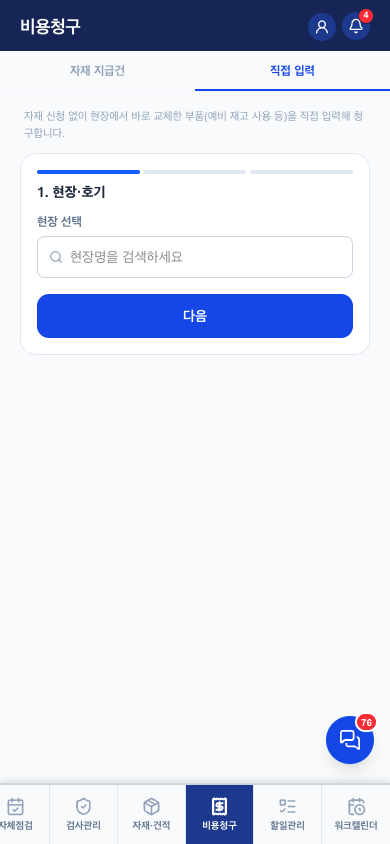

비용청구 · 할일관리 v0.1
1. 체인 — 두 탭은 한 줄기다
 자재·견적 신청
자재·견적 신청→
자재담당
지급 완료
관리자 처리지급 완료
→

할일 (자동 생성)→

비용청구 → 할일 자동완료- 자재·견적 연동 할일은 수동 체크 불가 — 비용청구를 생성해야 자동 완료. 청구를 빠뜨린 채 "일 끝났다"고 못 하게 하는 장치 (todos 완료 권한 규칙, 2026-08 확정)
- 수동 할일(관리자 부여)·검사보완·자체점검 지적만 체크로 완료 가능
- 30일 초과 미청구는 관리자 대시보드에 경고로 떠오름 — 체인의 마지막 안전망
2. 화면 요소

| 화면 | 핵심 규칙 |
|---|---|
| 비용청구 — 자재 지급건 | 지급 완료된 건만 청구 대상으로 표시. 견적 연동 건은 금액이 견적서 고정("견적서 참조") |
| 비용청구 — 직접 입력 | 자재 신청 없이 발생한 비용(현장 구매 등) 수기 청구 |
| 할일관리 | 구분: 자재/견적(자동완료형) · 수동 · 검사보완 · 자체점검지적. 재배정 요청 가능(관리자 승인) |
4. QA 체크포인트 — 2026-08-04 검증 (QA-RULES 7장)
- ✅ 부분 실패 시 중복청구 방지 — 여러 호기 청구 중 일부 실패하면 성공한 호기는 폼에서 제거 (재시도 시 이중청구 차단)
- ✅ 청구 저장됐는데 할일 완료 처리 실패하면 명시적 알럿 ("목록에 남아있을 수 있으니 관리자 확인")
- ✅ 할일 완료 권한 — 연동 할일 수동 체크 불가
- ✅ 재배정 요청 → 관리자 알림, 담당자 변경 시 요청 자동 해제
6. 화이트라벨 — 구일전용 → 타사 일반화
두 탭 모두 DB 데이터 기반 — 화이트라벨 대상 없음. 30일 미청구 기준만 tenants.settings 후보.
변경 이력
| 버전 | 날짜 | 변경 |
|---|---|---|
| v0.1 | 2026-08-04 | 최초 작성 — 두 탭을 체인으로 묶은 형식, 완료 권한 규칙·중복청구 방지 QA 반영 |